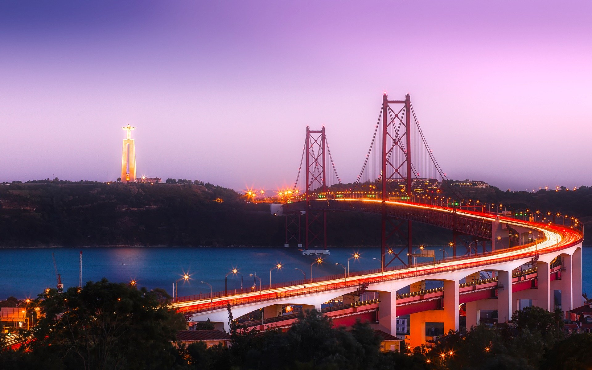

Capitale du Portugal, Lisbonne est une ville très ancienne, devenue ces dernières années une ville très prisée pour sa convivialité, son climat ensoleillé et son cadre authentique.
La ville aux 7 collines offre des points de vue stupéfiants pour apprécier la ville de haut mais aussi une multitude de monuments historiques et de ruelles pittoresques et souvent pentues aux maisons de couleurs où il fait bon errer. À cela s'ajoute une atmosphère bohème qui donne à la ville ce charme si particulier.
La capitale portugaise possède aussi son fleuve, le Tage, qui dessine le panorama de la ville et se jette dans l'océan Atlantique.